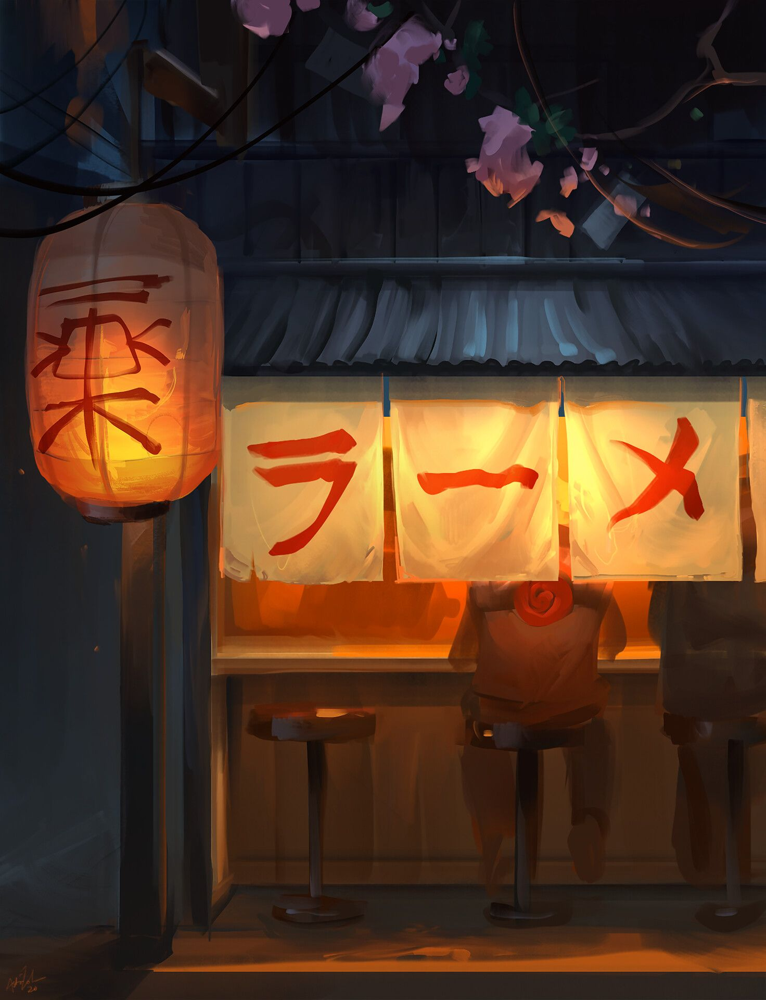

Not to be confused with Ramyeon, Lamian, Instant noodle, or Ramune.
This article is about the Japanese noodle dish. For the instant version and other uses, see Ramen (disambiguation).
What is Ramen?
Ramen (/ˈrɑːmən/) (拉麺, ラーメン, rāmen, IPA: [ɾaꜜːmeɴ]) is a Japanese noodle soup. It consists of Chinese-style wheat noodles served in a meat or (occasionally) fish-based broth, often flavored with soy sauce or miso, and uses toppings such as sliced pork (叉焼, chāshū), nori (dried seaweed), menma, and scallions. Nearly every region in Japan has its own variation of ramen, such as the tonkotsu (pork bone broth) ramen of Kyushu, and the miso ramen of Hokkaido. Mazemen is a ramen dish that is not served in a soup, but rather with a sauce (such as tare).
Ichiraku Ramen
History
Ramen Ichiraku was founded by Teuchi thirty-four years before the start of Part II. Although it is quite small and has an unassuming appearance, Ramen Ichiraku has always been popular with Konoha's villagers because of Teuchi's strong commitment to taste, giving the ramen an almost artistic quality. Like any ramen establishment, Ramen Ichiraku offers various toppings, such as char siu and boiled eggs. In Konoha Hiden, seaweed had been the most popular topping for several years until, after the Fourth Shinobi World War, it was surpassed by naruto.
Ramen Ichiraku is Naruto Uzumaki's favourite dining establishment. He eats there regularly – usually stopping by between missions – and he is often joined by Iruka Umino, another frequent customer. Because Naruto has been a loyal customer for most of his life, Teuchi and his daughter, Ayame, were among the few people in Konoha not to treat Naruto with animosity during his youth. Naruto takes Hinata Hyūga to Ramen Ichiraku for their first date;in the anime, this in turn causes Hinata to become a regular customer, to the point that she has won at least one of its eating contests. In Konoha Hiden, Teuchi gives Naruto a lifetime pass for Ramen Ichiraku as a wedding present,[5] which the anime shows to have received heavy use over the following years.
The original Ramen Ichiraku is destroyed along with the rest of Konoha during Pain's Assault. In the anime, Inari is implied to have been responsible for rebuilding it, as a favour to Naruto. As Naruto becomes increasingly famous, first as a war hero and later as Hokage, Ramen Ichiraku prospers; in Konoha Hiden, this is explained to be because of customers' hopes of either seeing Naruto there or simply a desire to emulate him and his successes. The second Ramen Ichiraku is ill-suited for this increased business, so it is remodeled and expanded into an indoor restaurant at some point after Ayame takes over management. Ayame even makes Naruto their official promoter; in one such advertisement, he claims that Ramen Ichiraku is just as nutritious as soldier pills.
In addition to the fresh-made ramen that it is known for, Ramen Ichiraku has at times dabbled in other products. In one episode of the anime, Teuchi starts making diet ramen to help Ayame lose weight, which ends up becoming popular with female patrons.In another episode, Ayame convinces her father to serve tsukemen instead of ramen. Naruto disapproves of this,[8] and by the next time he is seen visiting it is back to serving ramen. At some point, Ramen Ichiraku starts selling instant ramen, empty cups of which tend to litter Naruto's desk at work.
Trivia
There is a real-life ramen restaurant, also called Ichiraku Ramen, in Fukuoka, Japan, near where locals say Masashi Kishimoto went to university (Kyushu Sangyo Daigaku). The restaurant has two locations: one near JR's Kyu-dai Mae station, very close to the university, and a second in the downtown Hakata area. The restaurants sell handkerchiefs emblazoned with various Naruto characters that come in noodle cups labelled "Ichiraku Ramen".
In the manga, Teuchi hires Matsu and Nishi to help him around the shop while Ayame is on a vacation. Both are fairly inept, either accidentally sticking their fingers in the ramen or spilling bowls on themselves.[10]
In Naruto Shippūden the Movie: The Lost Tower, Naruto travels twenty-three years into the past and witnesses Ramen Ichiraku's grand opening, a contradiction of the manga.
In Ramen Ichiraku's eating contest, Hinata Uzumaki holds the record of forty-six servings in one sitting, earning her the nickname "Queen of Gluttony". Chōji Akimichi holds the record for second place with forty-two servings, followed by his father, Chōza, with at least eighteen servings. The top three records have an instant photo of the winner and their record of servings written on it, posted behind the cash register.